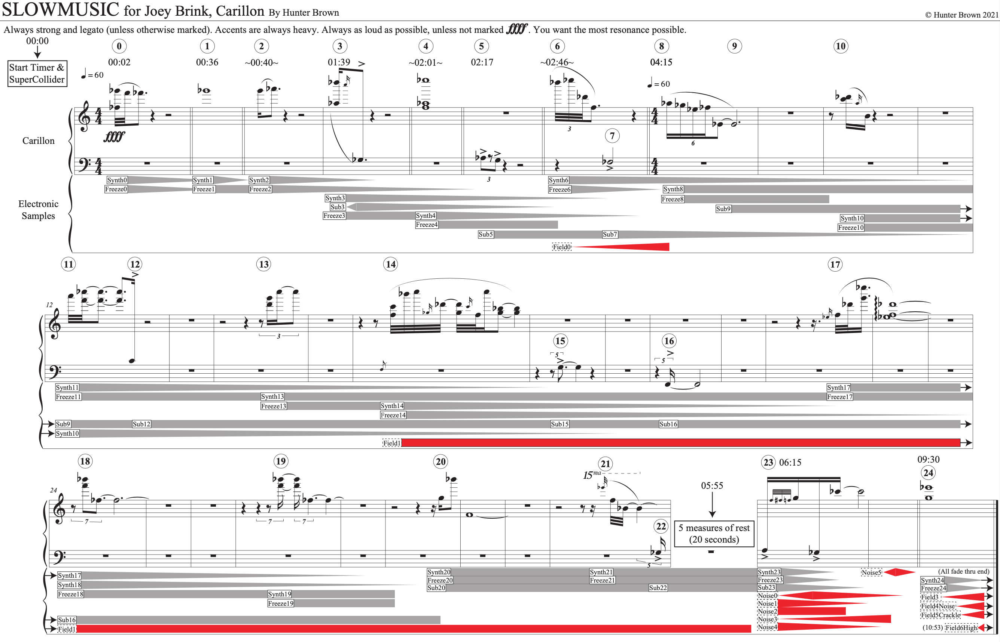

SLOWMUSIC explores the site specific resonances of the Rockefeller Memorial Chapel carillonʼs location at the corner of 59th street and South Woodlawn Ave in Chicago Illinois. This workʼs stagnant pace and synthetic sound world transforms this street corner by projecting a plastic reincarnation on top of itself.
